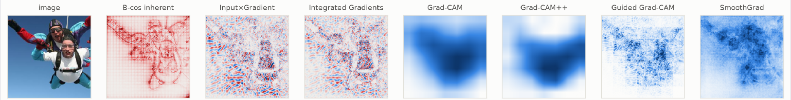
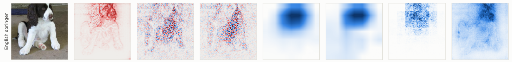
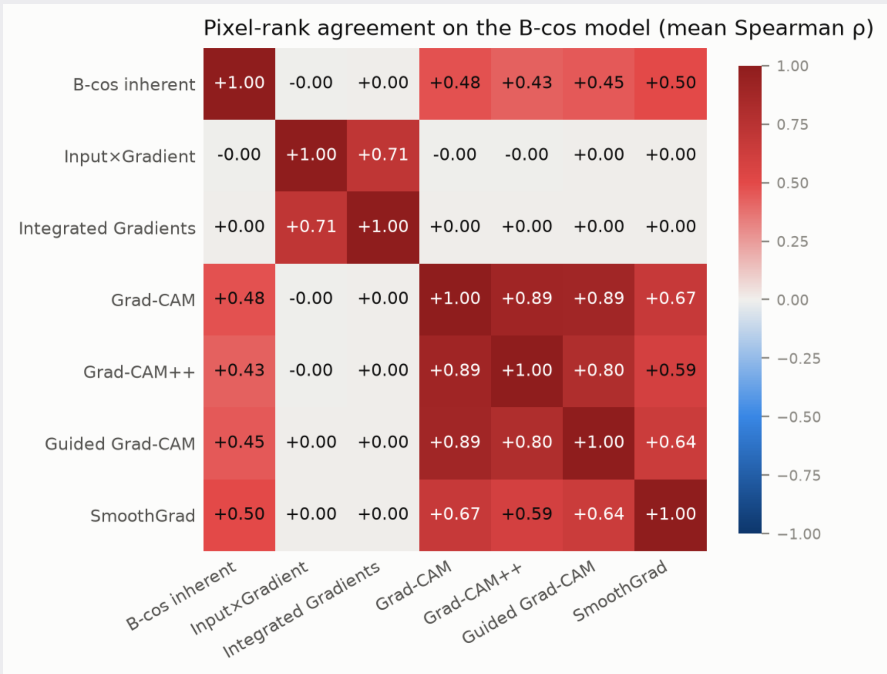
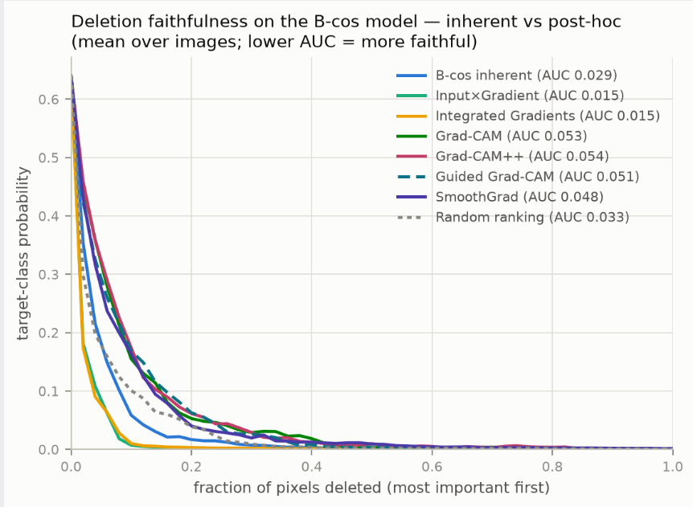

Explainable AI · Research Project
TL;DR
B-cos networks are built to explain themselves. This project tests whether that built-in explanation agrees with six standard post-hoc attribution methods computed on the same model, and which of them is actually more faithful. The inherent map only partly agrees with post-hoc maps: it correlates moderately with the CAM-family methods and SmoothGrad (ρ = 0.43–0.50) but not at all with Input×Gradient and Integrated Gradients (ρ ≈ 0). Which explanation counts as "most faithful" flips with the deletion protocol: gradient methods win with black fill, the inherent map wins with blur fill. Post-hoc methods therefore are not redundant on an inherently interpretable model, and nearly all of them are more faithful on B-cos than on a standard ResNet18, though incremental deletion cannot make that cross-model comparison fully fair.
Most explanations for deep vision models are post-hoc: the network is trained as a black box, and an attribution method such as Grad-CAM or Integrated Gradients is applied afterwards to estimate which pixels mattered. B-cos networks take the opposite approach. By replacing linear layers with B-cos transforms that reward alignment between weights and inputs, the model's whole computation can be summarised as a single input-dependent linear map, which doubles as an explanation the model gives of itself.
That raises a natural question: once a model explains itself, are post-hoc methods still needed? This project addresses four questions:
All experiments used Imagenette, a 10-class subset of ImageNet with visually distinct categories. Because both models are ImageNet-pretrained, Imagenette labels map directly onto ImageNet logits, so no fine-tuning was needed and the same targets were used for both networks.
| Property | Detail |
|---|---|
| Classes | 10 (tench, English springer, cassette player, chain saw, church, French horn, garbage truck, gas pump, golf ball, parachute) |
| Sample | 50 fixed validation images (seed 59), identical for every method, model, fill and metric |
| Preprocessing | Resize to 256, center-crop to 224×224, scale to [0, 1] |
For each image, seven importance maps were generated on B-cos ResNet18 (the inherent map plus six post-hoc methods) and six on the standard ResNet18. Every map is 224×224, and only its pixel ranking is used downstream, so differences in scale between methods do not matter.
| Method | Configuration |
|---|---|
| B-cos inherent | The model's own dynamic linear map (B-cos model only) |
| Input×Gradient | Captum |
| Integrated Gradients | Captum, 50 steps, black baseline |
| SmoothGrad | Captum, 25 samples, σ = 0.15 |
| Grad-CAM | Last convolutional block |
| Guided Grad-CAM | Captum |
| Grad-CAM++ | Implemented manually (not in Captum); uses second- and third-order derivatives to weight positive gradients, improving localisation of multiple objects and small regions |
Stage 1 — Agreement (Spearman ρ)
For each image, the pixels of every map were ranked and each pair of maps compared with Spearman's rank correlation (scipy.stats.spearmanr), then averaged over the 50 images. This depends only on the maps, so it is independent of any deletion setting.
Stage 2 — Faithfulness (Incremental Deletion)
The most important pixels according to each map were removed over 50 steps while tracking the target-class probability. The area under this deletion curve (AUC) is the faithfulness score: a lower AUC means the map found the pixels the model truly relies on.
Stage 3 — Robustness Checks
Deletion was repeated with black fill (reference) and Gaussian blur fill (RISE parameters, kernel 11, σ 5) to see whether the ranking depends on how pixels are removed. For the three signed methods (B-cos inherent, Input×Gradient, Integrated Gradients), ranking by signed versus absolute values was also compared.
Stage 4 — Random Baseline & Cross-Model Comparison
Deletion with a random pixel ordering was run on both models (AUC 0.033 on B-cos, 0.037 on standard) as a reference point, and used to attempt a comparison of the six shared methods across the two architectures. Results were stable across three random seeds (42, 59, 62) and sample sizes from N = 25 to 200.


Fig 1. All seven maps on the B-cos model for two Imagenette images. Left to right: input, B-cos inherent, Input×Gradient, Integrated Gradients, Grad-CAM, Grad-CAM++, Guided Grad-CAM, SmoothGrad.
The seven maps on the B-cos model split into two clear families. Input×Gradient and Integrated Gradients agree strongly with each other but have essentially zero correlation with everything else, including the inherent map. The CAM-family methods and SmoothGrad agree closely with one another and moderately with the inherent explanation.

Fig 2. Mean pixel-rank agreement (Spearman ρ) between every pair of maps on B-cos ResNet18, averaged over 50 images.
Disagreement on its own would not matter if the outlying methods were simply wrong. They are not: Input×Gradient and Integrated Gradients turn out to be among the most faithful maps in the deletion test below. Two explanations that rank pixels completely differently can both track the model's behaviour, which means the post-hoc methods are surfacing information the inherent map does not.
With the standard black fill, Input×Gradient and Integrated Gradients collapse the target-class probability fastest and beat the inherent map by roughly half (AUC 0.015 vs 0.029). The CAM-family methods and SmoothGrad actually score worse than random pixel ordering under this setting.

Fig 3. Mean deletion curves on B-cos ResNet18 with black fill. Lower area under the curve means a more faithful map.
Switching to Gaussian blur fill reverses the winner: the B-cos inherent map becomes the most faithful explanation, and the gradient methods fall behind it.
| Method | Black fill | Blur fill |
|---|---|---|
| Input×Gradient | 0.015 | 0.223 |
| Integrated Gradients | 0.015 | 0.261 |
| B-cos inherent | 0.029 | 0.177 |
| Random (control) | 0.033 | 0.249 |
| SmoothGrad | 0.048 | 0.254 |
| Guided Grad-CAM | 0.051 | 0.267 |
| Grad-CAM | 0.053 | 0.296 |
| Grad-CAM++ | 0.054 | 0.293 |
Table 1. Deletion AUC on B-cos ResNet18 under black and blur fill (lower = more faithful; best per column underlined).
Black pixels are an unnatural input for a B-cos network: its AddInverse input encoding concatenates each image with its inverse, so a black pixel is not a neutral "off" signal but an active one. Black fill also coincides exactly with the black baseline used by Integrated Gradients, which hands that method a built-in advantage. Blur keeps deleted regions closer to natural image statistics and removes this bias.
Ranking pixels by absolute rather than signed attribution makes Input×Gradient and Integrated Gradients noticeably less faithful, while the B-cos inherent map is unchanged. The sign carries real information for the gradient methods, while the inherent map's faithfulness does not depend on it.
Applying the same six methods to both architectures, every method except Guided Grad-CAM achieves a lower deletion AUC on B-cos ResNet18 than on the standard ResNet18. The CAM methods improve the most, at roughly 40%.
| Method | B-cos | Standard |
|---|---|---|
| Random (control) | 0.033 | 0.037 |
| Input×Gradient | 0.015 | 0.023 |
| Integrated Gradients | 0.015 | 0.021 |
| SmoothGrad | 0.048 | 0.069 |
| Guided Grad-CAM | 0.051 | 0.036 |
| Grad-CAM | 0.053 | 0.085 |
| Grad-CAM++ | 0.054 | 0.088 |
| B-cos inherent | 0.029 | — |
Table 2. Deletion AUC (black fill) for the same methods on both models. Lower is better; the better model per method is underlined.
Guided Grad-CAM is the exception because it relies on guided backpropagation, whose ReLU-based gradient rule matches the standard ResNet's activations but not the B-cos transforms.
These cross-model numbers should be read with caution. Incremental deletion pushes images out of the training distribution, and the two architectures degrade on such corrupted inputs in different ways. The random baseline aligns the two models' zero points, but it cannot correct for those different degradation paths, so the AUCs still do not live in a fully shared space.
1. Self-explanation ≠ consensus: The B-cos inherent map partly agrees with Grad-CAM, Grad-CAM++, Guided Grad-CAM and SmoothGrad, but not at all with Input×Gradient or Integrated Gradients.
2. Faithfulness rankings are protocol-dependent: Black fill favours the gradient methods; blur fill makes the inherent map the most faithful. Any claim that one explanation is "the most faithful" needs to state the evaluation setup it holds under.
3. Post-hoc methods are not redundant: Input×Gradient and Integrated Gradients are faithful yet rank pixels very differently from the inherent map, so they capture information the self-explanation misses, even on an inherently interpretable model.
4. B-cos makes post-hoc methods more faithful, with caveats: Every method except Guided Grad-CAM scores better on B-cos than on standard ResNet18, but out-of-distribution effects from deletion keep the cross-model comparison from being fully fair.
An in-domain metric such as the single-deletion score of Hesse et al. (IDSDS), which removes one patch at a time from near-natural images, would keep inputs close to the training distribution and make scores more comparable across architectures. Re-running these experiments with it would test the findings without the out-of-domain and cross-model problems of incremental deletion.